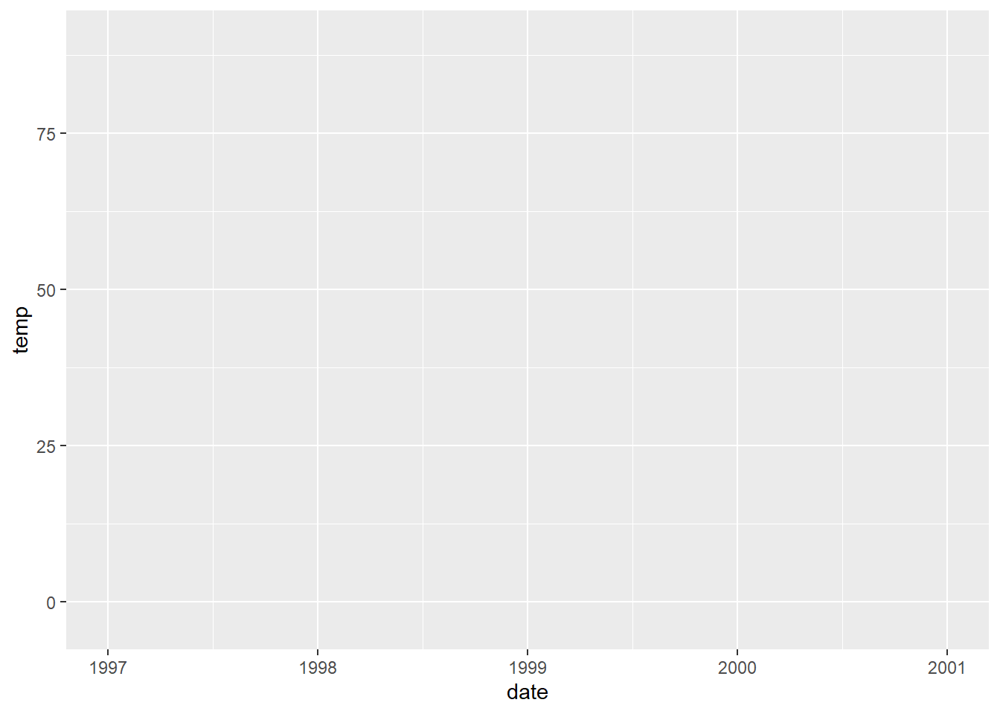
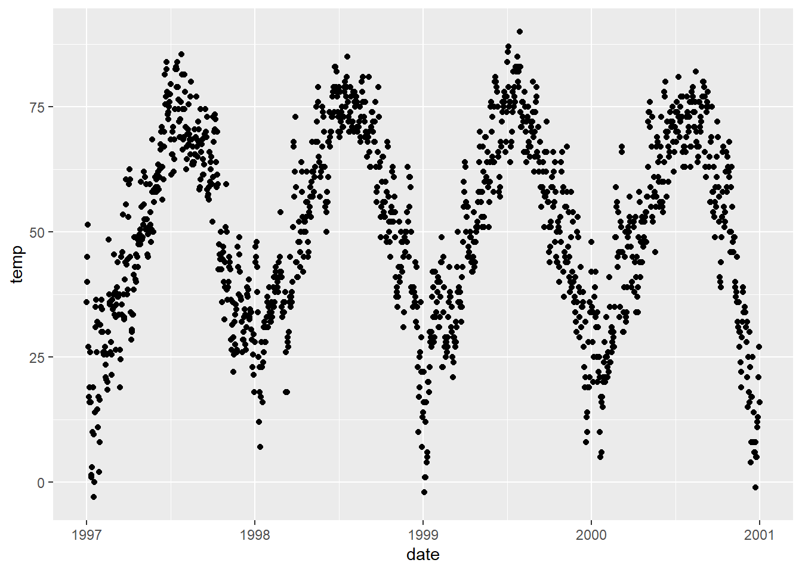
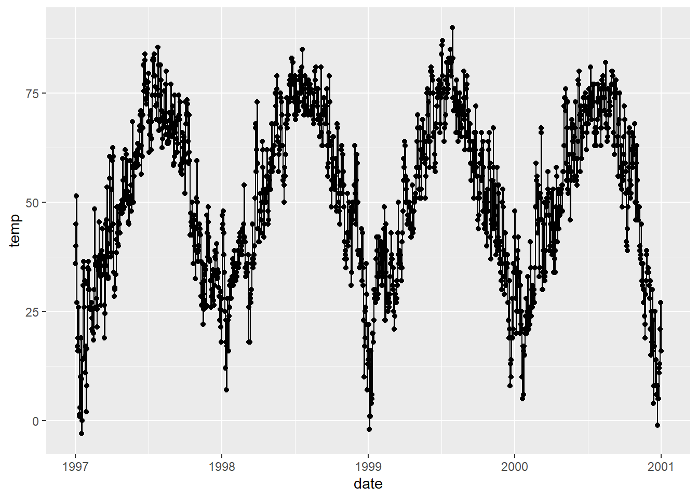

ggplot2 is a graphics system that facilitates the declarative creation of visualizations, founded on principles outlined in The Grammar of Graphics. With ggplot2, you furnish the data, specify how variables should be mapped to aesthetics, define graphical parameters to employ, and the system handles the rest.
A ggplot is made up several key elements:
Data: Your raw dataset that you want to visualize.
Geometriesgeom_: These are the shapes that represent your data, like points, lines, or bars.
Aestheticsaes(): This controls how your data is visually represented, including aspects like color, size, and shape.
Scalesscale_: These map the data onto the aesthetic dimensions, like converting data values to plot dimensions or factor values to colors.
Statistical transformationsstat_: These are statistical summaries of your data, such as calculating quantiles or fitting curves.
Coordinate systemcoord_: This defines how your data coordinates are mapped onto the plot’s coordinate system.
Facetsfacet_: This organizes your data into a grid of plots based on specified variables.
Visual themestheme(): These set the overall appearance of your plot, covering things like background, grids, axes, default fonts, sizes, and colors.
The number of elements may vary depending on the situation you’re working on.
3.1 A Default ggplot
Before diving into the capabilities of {ggplot2}, we need to load the package. Alternatively, we can load it through the tidyverse package collection:
library(ggplot2)# Or,library(tidyverse)
── Attaching core tidyverse packages ──────────────────────── tidyverse 2.0.0 ──
✔ dplyr 1.1.4 ✔ readr 2.1.5
✔ forcats 1.0.0 ✔ stringr 1.5.1
✔ lubridate 1.9.3 ✔ tibble 3.2.1
✔ purrr 1.0.2 ✔ tidyr 1.3.1
── Conflicts ────────────────────────────────────────── tidyverse_conflicts() ──
✖ dplyr::filter() masks stats::filter()
✖ dplyr::lag() masks stats::lag()
ℹ Use the conflicted package (<http://conflicted.r-lib.org/>) to force all conflicts to become errors
The syntax of {ggplot2} differs from base R. Following the basic elements, a default ggplot requires specifying three things: the data, aesthetics, and a geometry. To begin defining a plotting object, we call ggplot(data = df), indicating that we’ll work with that dataset. Typically, we aim to plot two variables—one on the x-axis and one on the y-axis. These are positional aesthetics, so we add aes(x = var1, y = var2) to the ggplot() call (where aes() denotes aesthetics). However, there are cases where one may need to specify one, three, or more variables, which we’ll address later.
Pay Attention!
We indicate the data outside of aes() and include the variables that ggplot maps to the aesthetics inside of aes().
In this instance, we assign the variable date to the x-position and the variable temp to the y-position. Subsequently, we’ll also map variables to various other aesthetics such as color, size, and shape.
(g <-ggplot(chic, aes(x = date, y = temp)))

Ah, the reason only a panel is generated when executing this code is because {ggplot2} lacks information on how we want to visualize the data. We still need to specify a geometry!
In {ggplot2}, you can store the current ggobject in a variable of your choosing, such as g. This allows you to extend the ggobject later by adding additional layers, either all at once or by assigning it to the same or another variable.
A Quick Tip!
By using parentheses when assigning an object, the object will be printed immediately. Instead of writing g <- ggplot(...) followed by g, we can simply write (g <- ggplot(...)).
There’s a wide array of geometries in {ggplot2}, often referred to as geoms because their function names typically start with geom_. You can find the full list of default geoms here, and there are even more options available through extension packages, which you can explore here. To instruct {ggplot2} on the style we want to use, we can, for example, add geom_point() to create a scatter plot:
g +geom_point()

Great! However, this data could also be represented as a line plot (although it might not be the optimal choice, but it’s a common practice). So, we can simply replace geom_point() with geom_line() and boom!
g +geom_line()
Indeed, one can combine multiple geometric layers, and this is where the magic and fun truly begin!
g +geom_line() +geom_point()

That’s enough discussion on geometries for now. Don’t worry, we’ll dive into various plot types at a later point, as outlined here.
3.1.1 Change Properties of Geometries
Within the geom_* command, you can already manipulate visual aesthetics such as the color, shape, and size of your points. Let’s transform all points into large fire-red diamonds!
g +geom_point(color ="firebrick", shape ="diamond", size =2)
Color or Colour?
{ggplot2} understands both color and colour as well as the short version col.
Color Presets 🎨
You can utilize preset colors (a full list can be found here) or hex color codes, both enclosed in quotes. Additionally, you can specify RGB/RGBA colors using the rgb() function. Click to expand:
Each geom has its unique properties, referred to as arguments, and the same argument might produce different effects depending on the geom you’re employing.
To further demonstrate ggplot’s versatility, let’s enhance the appearance by removing the default grayish {ggplot2} style and setting a different built-in theme, such as theme_bw(). By using theme_set(), all subsequent plots will adopt the same black-and-white theme. This adjustment will notably enhance the appearance of the red points!
For further details on using built-in themes and customizing themes, refer to the section “Working with Themes”. Starting from the next chapter, we’ll also utilize the theme() function to customize specific elements of the theme.
Remember!
theme() is a crucial command for manually adjusting various theme elements such as texts, rectangles, and lines.
To explore the numerous details of a ggplot theme that can be modified, refer to the extensive list available here. Take your time, as it’s a comprehensive list!